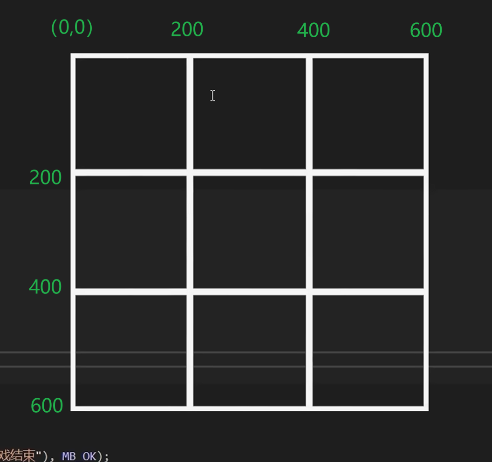
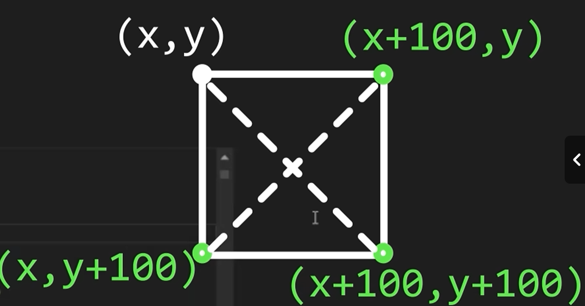
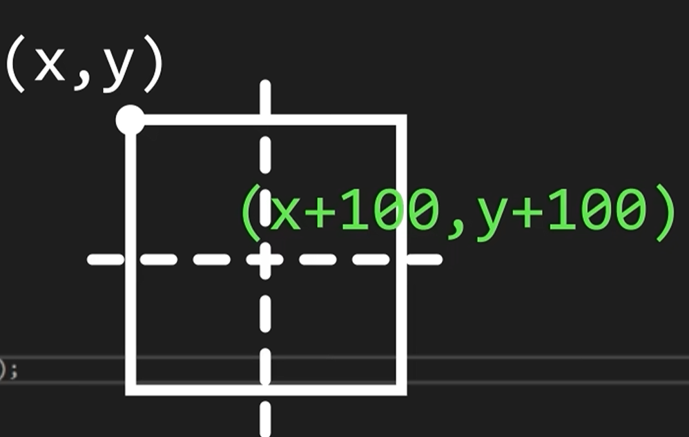

概览
技术栈：C++ + EasyX
项目目标：完成 EasyX 环境搭建，完成两个小demo（跟随鼠标的小球、井字棋），理解游戏循环的雏形
课程来源：B站Up-VoidMatrix
环境配置
EasyX：直接搜索“EasyX”，官网直接下载安装
需要在头文件中包含<graphics.h>来使用EasyX中的库函数。
Demo1 - 跟随鼠标的圆
设计思路
创建窗口并创建游戏主循环
绘制圆并实现圆跟随鼠标移动
用双缓冲对绘图进行优化
开发流程
初始化窗口与主循环
我们使用initgraph()来初始化窗口，然后用一个死循环来避免窗口一闪而过。
1
2
3
4
5
6
7
8
9
|
int main()
{
initgraph(1280, 720);
while (true)
{
}
return 0;
}
|
这个死循环是所有游戏的通用框架。所有的输入处理和更新等都会在这个游戏主循环中进行：
1
2
3
4
5
|
while (true)
{
// 玩家的输入
// 画面的更新
}
|
绘制圆
使用solidcircle() 来绘制圆。
输入处理
使用peekmessage() 来处理输入。
在EasyX中，鼠标的移动、点击，键盘的输入等，都被称之为“message”。每次我们有输入操作，EasyX都会将这些“消息”放入消息队列中，每次我们调用 peekmessage()，EasyX就会尝试从消息队列中拉取一个消息，成功返回 true，失败返回 false。所以我们另一个循环不断地从消息队列中拉取消息进行处理，直到消息队列中没有消息为止。
查阅文档，peekmessge() 必须带有一个参数 msg，msg 是一个指向消息结构体 ExMessage 的指针，用来保存获取到的消息。而 ExMessage 中的一个成员 message 代表“消息标识”，它对应相应的鼠标和键盘等输入操作。于是整个输入处理可以写为：
1
2
3
4
5
6
7
8
9
10
11
|
while (true)
{
ExMessage msg; // 实例化一个ExMessage结构体对象
while (peekmessage(&msg))
{
if (msg == WM_MOUSEMOVE)
{
// 处理鼠标移动逻辑
}
}
}
|
清屏
如果不清屏的话，会连续绘制出的小球会展现鼠标移动的轨迹，所以在每次绘制小球前都需要先进行清屏。调用 cleardevice() 进行清屏。
用双缓冲对绘图进行优化处理
使用BeginBatchDraw()、 FlushBatchDraw()和EndBatchDraw()双缓冲处理。
1
2
3
4
5
6
7
8
9
10
11
12
13
|
BeginBatchDraw();
while (true) // 游戏主循环
{
// 玩家输入
// 游戏更新
cleardevice(); // 清屏
// 绘制
FlushBatchDraw();
}
EndBatchDraw();
|
关键步骤
initgraph() 初始化图形窗口
peekmessage() 获取鼠标移动消息
cleardevice() 清屏
solidcircle(x, y, r) 绘制圆
BeginBatchDraw()、 FlushBatchDraw()、EndBatchDraw()双缓冲优化绘图
知识点
EasyX 的坐标系
EasyX 的坐标系在屏幕左上方，x 轴的正方向向右，y 轴的正方向向下。

渲染缓冲区
可以把渲染缓冲区想象成一块巨大的画布，调用Draw逻辑的过程就是在“画布”上画画。先绘制的内容会被后绘制的内容覆盖，而调用cleardevice()就等于是用当前的填充颜色（默认黑色）将“画布”覆盖了一遍。
调用BeginBatchDraw()就相当于EasyX为我们新建了一块画布，而这块画布就是新的渲染缓冲区。它和窗口的渲染缓冲区不一样的是，它是不可见的。随后执行的所有Draw逻辑，都会绘制在这块新的画布上。当调用FlushBatchDraw()和EndBatchDraw()时，EasyX会将这两块画布进行迅速交换，这一过程非常迅速以至于我们是看不见的。所以这样就解决因为绘制频繁而导致的画面闪烁问题。
游戏主循环
在一个死循环中，不断执行：读取操作、处理数据、绘制画面的过程。
1
2
3
4
5
6
|
while (true)
{
// 读取操作();
// 处理数据();
// 绘制画面();
}
|
在主循环开始之前，我们需要先对游戏数据进行初始化，所以这部分一般放置于BeginBatchDraw()之前。
在主循环结束之后，需要相应地对游戏资源进行释放。
Demo2 - 井字棋游戏
游戏介绍
玩家在3*3的棋盘上轮流下子，用O和X表示各自的棋子，如果一方任意三个相同的棋子连成一条直线或斜线时，这一方获胜；如果9个网格均被棋子填充但是却未出现获胜方时，则为平局。此demo只实现本地人人对战。
设计思路
游戏主循环中三要素的设计
读取操作:
对鼠标左键按下的消息进行处理。当鼠标左键点击空白的棋盘格子时，执行落子操作。
数据处理:
对游戏结束条件进行检测。游戏结束条件为三颗同类型的棋子连成一条直线/斜线，或者棋盘被填满。游戏结束时，使用弹窗。告诉玩家游戏结果，然后退出主循环。
绘制画面:
用line()将窗口绘制为3*3的网格棋盘。同样用line()在网格上绘制出交叉的对角线代表一方玩家执的X棋子。用circle()绘制出另一方玩家执的O棋子。
在窗口左上角输出一行文字，告诉玩家即将落子的棋子类型。
数据结构
棋盘和棋子:
用二维数组char board_data[3][3]代表棋盘，用字符char 'X'和char 'O'代表棋子，而还未落子的格子用char '-'表示。
游戏结束
分类讨论游戏结束的情况。
情况一：某一方获胜。只需对X字符和O字符分别进行穷举判定。共8种。
情况二：平局。棋盘中没有一个格子是字符-且没有玩家获胜的情况。
开发流程
遵循的总体思路
先框架后细化。
先把游戏主框架用代码表示
这样可以确保我们在写代码是不会被突然出现的细节打扰。使用一个bool running来判断游戏是否运行。使用CheckWin()和CheckDraw()来判断游戏结束是哪一种情况。
1
2
3
4
5
6
7
8
9
10
11
12
13
14
15
16
17
18
19
20
21
22
23
24
25
26
27
28
29
30
31
32
33
34
35
36
|
bool running = true;
ExMessage msg;
BeginBatchDraw(); // 开启批量绘图
while (running) // 游戏主循环
{
while (peekmessage(&msg)) // 读取操作
{
}
// 处理数据
if (CheckWin('x'))
{
// 跳出弹窗消息，结束游戏
MessageBox(GetHWnd(), _T("x 玩家获胜"), _T("游戏结束"), MB_OK);
running = false;
}
else if (CheckWin('o'))
{
// 类似上述处理
}
else if (CheckDraw())
{
// 类似上述处理
}
cleardevice(); // 每次绘图前先清空画面
// 绘制所有的东西
DrawBoard(); // 绘制棋盘
DrawPiece(); // 绘制棋子
DrawPrompt(); // 绘制即将落子的棋子信息
FlushBatchDraw(); // 每次游戏循环后，都刷新批量绘图的缓冲区
}
EndBatchDraw(); // 游戏结束，结束批量绘图
|
细化读取操作部分逻辑
鼠标的坐标在窗口其实是像素点的坐标，于是需要将鼠标的坐标转化为棋盘的网格。用图展示其对应的关系：

对应的代码可以表示为：
1
2
3
4
5
6
|
int x = msg.x; // 鼠标的像素坐标
int y = msg.y;
int index_x = x / 200; // 鼠标的棋盘坐标
int index_y = y / 200;
|
然后，就可以进行落子的逻辑了。最后，记得在成功落子后切换为另一种类型的棋子。
细化数据处理部分的逻辑
CheckWin()函数就按之前提到的穷举8种情况即可。CheckDraw()部分的代码，需要遍历棋盘的每一个格子，检查是否有’-’。需要注意的是，如果是一行一行检查的话，外层循环是列，而内层循环是行：
1
2
3
4
5
6
7
8
9
10
|
for (int col = 0; col < 3; col++)
{
for (int row = 0; row < 3; row++)
{
if (board[row][col] == '-')
{
// 相应逻辑
}
}
}
|
细化绘制部分的逻辑
棋盘的绘制：直接只用line()对应相应的像素坐标。
X 棋子的绘制：同样使用line()绘制，只不过使用的是对角线的像素坐标。

O 棋子的绘制：使用circle()绘制，圆心的x和y分别要在各自棋盘格子像素点的基础上多加100个像素单位。

提示信息的绘制：为了在更通用的编码环境下使用，用了并不常见的类型和函数，但是和C中的printf()类似。
1
2
|
static TCHAR str[64];
_stprintf_s(str, _T("当前棋子类型：%c"), current_piece);
|
一些美化字体的函数：
1
2
|
settextcolor(RGB(225, 175, 45)); // 把颜色变为橙色，在视觉上更醒目
outtextxy(0, 0, str); // 在指定位置输出str字符串
|
优化
最后一枚落子不绘制：
如果胜负判断放在最后，那么由于MB_OK弹窗会等待玩家点击，点击后直接退出程序，会跳过最后一枚棋子的绘制。为了解决这个问题，这里简单粗暴的将绘制函数放在胜负判断的逻辑之前。
CPU占用高：
计算机在执行while循环时速度较快，我们编写的主循环在顷刻间已经执行完了成千上万次，占用了大量的CPU时间片。对于大部分物理刷新率仅有60Hz的显示设备来说，这是一种性能浪费。简单粗暴的解决方法是使用sleep(15)，让程序在每一次循环结束后强制等待15ms。但这不是推荐的做法。因为随游戏体量的增大，程序每次执行主循环所执行的计算任务可能是不同的，涉及到操作系统CPU计算资源的分配，会导致每次执行主循环所实际消耗的时间可能是不一样的。所以我们需要根据每一帧执行的实际耗时，动态计算在这之后要休眠多长时间。推荐的做法是我们自己设置帧率。用到的函数是GetTickCount()，它可以获取程序自运行开始以来到现在的毫秒数。
1
2
3
4
5
6
7
8
9
10
11
12
13
14
15
16
17
18
19
20
|
while (running)
{
DWORD start_time = GetTickCount(); // 获取此次循环初始时间
读取操作();
处理数据();
绘制画面();
DWORD end_time = GetTickCount(); // 获取此次循环结束时间
DWORD delta_time = end_time - start_time; // 计算间隔时间
// 依据间隔时间动态分配休眠时间
// 按每秒60帧刷新页面
if (delta_time < 1000 / 60) // 如果间隔时间<每秒60帧，要进行休眠；否则不需要。
{
Sleep(1000 / 60 - delta_time);
}
}
释放资源();
}
|
完整源码
1
2
3
4
5
6
7
8
9
10
11
12
13
14
15
16
17
18
19
20
21
22
23
24
25
26
27
28
29
30
31
32
33
34
35
36
37
38
39
40
41
42
43
44
45
46
47
48
49
50
51
52
53
54
55
56
57
58
59
60
61
62
63
64
65
66
67
68
69
70
71
72
73
74
75
76
77
78
79
80
81
82
83
84
85
86
87
88
89
90
91
92
93
94
95
96
97
98
99
100
101
102
103
104
105
106
107
108
109
110
111
112
113
114
115
116
117
118
119
120
121
122
123
124
125
126
127
128
129
130
131
132
133
134
135
136
137
138
139
140
141
142
143
144
145
146
147
148
149
150
151
152
153
154
155
156
157
158
159
160
161
162
163
164
165
166
167
168
169
170
171
172
173
174
175
176
177
|
#include <graphics.h>
char board_data[3][3] =
{
{'-', '-', '-'},
{'-', '-', '-'},
{'-', '-', '-'}
};
char current_piece = 'O';
bool CheckWin(char c);
bool CheckDraw();
void DrawBoard();
void DrawPiece();
void DrawPrompt();
int main()
{
//======= 初始化数据 =======
initgraph(600, 600);
ExMessage msg;
bool running = true;
// 双缓冲，解决图形闪烁问题
BeginBatchDraw();
//======= 游戏主循环 =======
while (running)
{
DWORD start_time = GetTickCount();
while (peekmessage(&msg))
{
//======= 读取操作 =======
// 检测鼠标左键按下后的消息
if (msg.message == WM_LBUTTONDOWN)
{
// 计算点击位置
int x = msg.x;
int y = msg.y;
int index_x = y / 200;
int index_y = x / 200;
//========= 处理数据 =========
// 落子
if (board_data[index_y][index_x] == '-')
{
board_data[index_y][index_x] = current_piece;
// 切换棋子类型
if (current_piece == 'O')
{
current_piece = 'X';
}
else if (current_piece == 'X')
{
current_piece = 'O';
}
}
}
}
cleardevice();
//===== 绘制 =====
DrawBoard();
DrawPiece();
DrawPrompt();
FlushBatchDraw();
// 判断胜负，出于解决最后一枚棋子绘制的问题而放在绘制逻辑之后
if (CheckWin('X'))
{
MessageBox(GetHWnd(), _T("X 玩家获胜"), _T("游戏结束"), MB_OK);
running = false;
}
else if (CheckWin('O'))
{
MessageBox(GetHWnd(), _T("O 玩家获胜"), _T("游戏结束"), MB_OK);
running = false;
}
else if (CheckDraw())
{
MessageBox(GetHWnd(), _T("平局"), _T("游戏结束"), MB_OK);
running = false;
}
//======= 设置帧率（优化）=======
DWORD end_time = GetTickCount();
DWORD delta_time = end_time - start_time;
if (delta_time < 1000 / 60)
{
Sleep(1000 / 60 - delta_time); // 节约性能，补足帧率至60，不要运行得太快
}
}
EndBatchDraw();
return 0;
}
bool CheckWin(char c)
{
if (board_data[0][0] == c && board_data[0][1] == c && board_data[0][2] == c)
return true;
if (board_data[1][0] == c && board_data[1][1] == c && board_data[1][2] == c)
return true;
if (board_data[2][0] == c && board_data[2][1] == c && board_data[2][2] == c)
return true;
if (board_data[0][0] == c && board_data[1][0] == c && board_data[2][0] == c)
return true;
if (board_data[0][1] == c && board_data[1][1] == c && board_data[2][1] == c)
return true;
if (board_data[0][2] == c && board_data[1][2] == c && board_data[2][2] == c)
return true;
if (board_data[2][0] == c && board_data[1][1] == c && board_data[0][2] == c)
return true;
if (board_data[0][0] == c && board_data[1][1] == c && board_data[2][2] == c)
return true;
return false;
}
bool CheckDraw()
{
for (int col = 0; col < 3; col++)
{
for (int row = 0; row < 3; row++)
{
if (board_data[row][col] == '-')
{
return false;
}
}
}
return true;
}
void DrawBoard()
{
line(0, 200, 600, 200);
line(0, 400, 600, 400);
line(200, 0, 200, 600);
line(400, 0, 400, 600);
}
void DrawPiece()
{
for (int col = 0; col < 3; col++)
{
for (int row = 0; row < 3; row++)
{
switch (board_data[row][col])
{
case '-':
break;
case 'O':
circle(200 * row + 100, 200 * col + 100, 100);
break;
case 'X':
line(200 * row, 200 * col, 200 * (row + 1), 200 * (col + 1));
line(200 * (row + 1), 200 * col, 200 * row, 200 * (col + 1));
}
}
}
}
void DrawPrompt()
{
static TCHAR str[64];
_stprintf_s(str, _T("当前棋子类型：%c"), current_piece);
settextcolor(RGB(225, 175, 45));
outtextxy(0, 0, str);
}
|
复盘和总结
这是我第一次如此透彻地理解游戏主循环、双缓冲机制、游戏中的坐标系以及帧率的设置。之前虽然也用C++和raylib做过一些小游戏，但是都是照猫画虎、囫囵吞枣、一知半解。这次的学习是跟着教程的思路和节奏做的，所以并未严格按照面向对象的思路去封装类，而是专注于用最简单、最快的实现方法，体会游戏的通用架构。按照top-down的思路，从框架到具体的一步步分解问题，逐个解决。计划跟完这位大佬的所有课程，在提升自己编程能力的同时，加深对游戏开发编程的理解，以及让自己的代码风格符合业界的惯例。